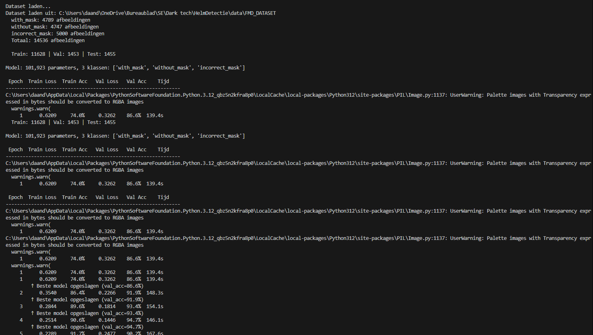
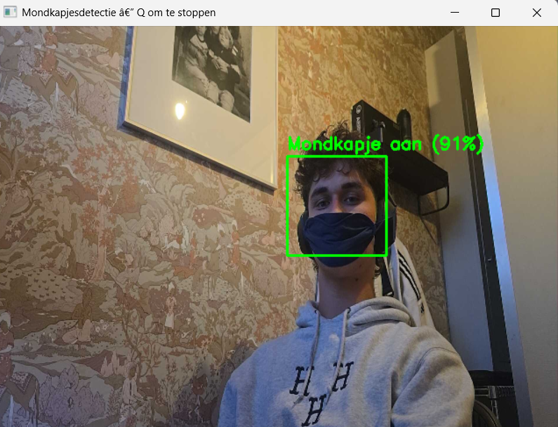
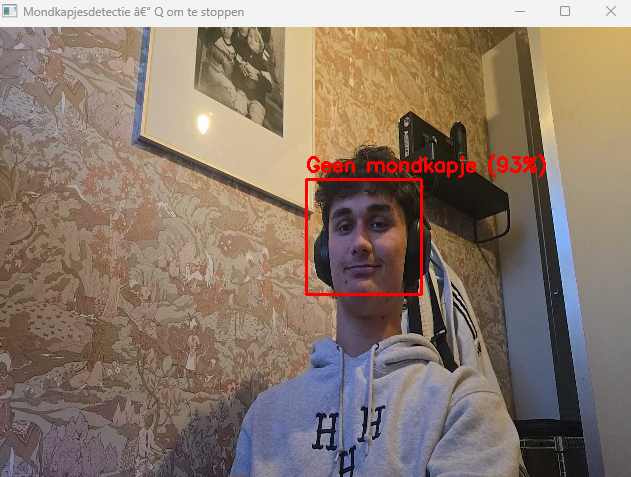
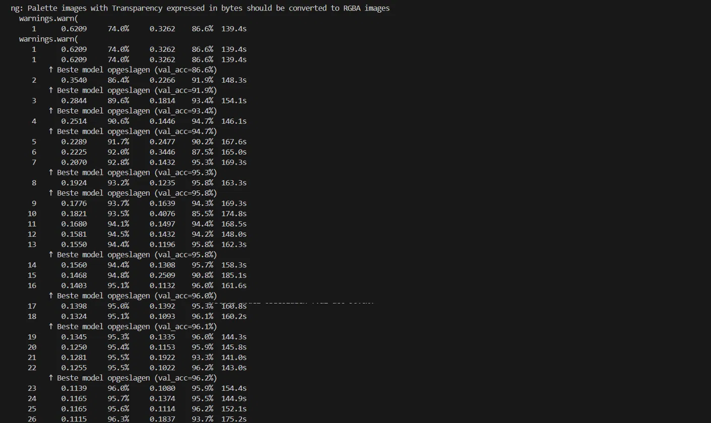
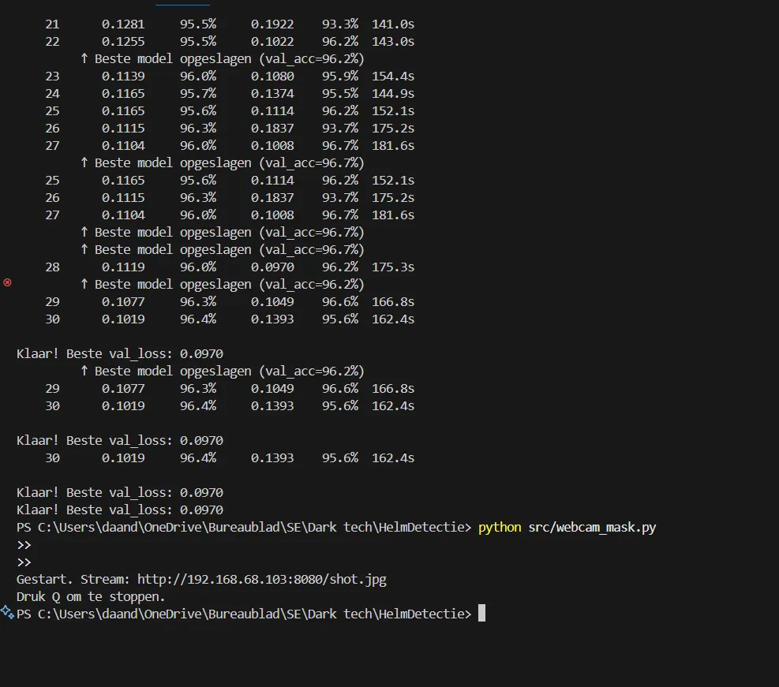
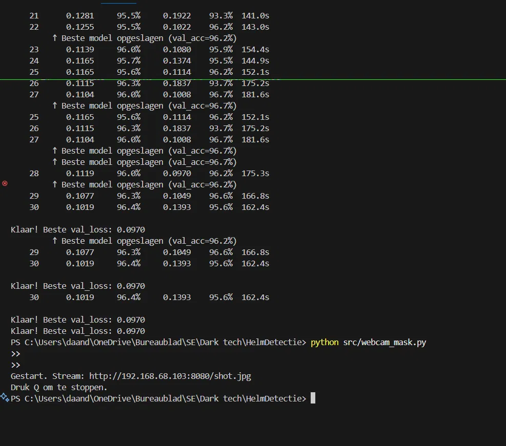

Het project
Een realtime systeem dat via een Android-telefoon als webcam herkent of iemand een mondkapje draagt, het fout draagt, of geen mondkapje heeft , drie klassen, 96.7% accuracy, volledig van scratch gebouwd zonder voorgetrainde modellen.
Alles is handmatig geïmplementeerd: elke convolutielaag, elke loss berekening, elke trainingsloop. Geen YOLOv8, geen framework dat de moeilijke delen verbergt.
De pipeline
Resultaat

Realtime output
Het systeem in actie , links met mondkapje, rechts zonder.


Trainingsresultaten
Van 74% accuracy in epoch 1 naar 96.7% in epoch 27 , over 30 epochs op een RTX 4050.



Wat maakt dit technisch zwaar
Twee complete systemen gebouwd, bewust gekozen welke te gebruiken
Eerst een YOLO-stijl objectdetector gebouwd van scratch , grid-gebaseerde detectie, drie-component loss, NMS , en ontdekt dat die aanpak 10× meer data nodig heeft dan beschikbaar was. Vervolgens bewust overgestapt op face cascade + classifier, wat met 14.535 afbeeldingen wél generaliseerde.
YOLO-stijl detection loss van scratch geïmplementeerd
Objectness loss, class loss en box regression loss als aparte componenten, inclusief de sqrt-trick voor kleine bounding boxes en gewogen λ-termen zoals in het originele YOLO-paper. Normaal verborgen achter een library.
Grid-based objectdetectie
YOLO-annotaties omzetten naar een [8×8×6] grid tensor: cel-toewijzing, genormaliseerde offset-coördinaten, multi-object handling per cell. Dit is hoe YOLO intern werkt.
Non-Maximum Suppression handmatig uitgeschreven
IoU-berekening, confidence-drempel en overlap-filtering volledig zelfgeschreven , zit in de meeste frameworks achter één functieaanroep.
Domain shift herkend en opgelost
De eerste dataset (Aziatische motorhelmen) haalde 81% accuracy in evaluatie maar werkte niet in de praktijk. Het probleem zelf diagnosticeren als domain shift, en niet alleen "het werkt niet" constateren.
96.7% accuracy op 14.535 afbeeldingen met een netwerk van 101.858 parameters , volledig zelfgebouwd, elke laag, elke loss, elke trainingsloop handmatig geïmplementeerd.
Uitdagingen
- Laptop webcam niet toegankelijk via OpenCV op Windows , opgelost via IP Webcam stream over wifi.
- Eerste datasets hadden domain shift , Aziatische helmen generaliseerden niet naar eigen situatie.
- Zelfgebouwde YOLO-detector overfitte bij 397 afbeeldingen , bewust overgestapt op classifier aanpak.
Wat ik heb geleerd
- Hoe convoluties, pooling en BatchNorm samenwerken in een CNN.
- Hoe backpropagation, CrossEntropyLoss en Adam optimizer het netwerk laten leren.
- Wat overfitting is en hoe je het voorkomt , en wanneer je architectuurkeuzes aanpast aan je data.
- Waarom datakwaliteit en diversiteit zwaarder wegen dan modelcomplexiteit.
- Hoe je een volledige ML pipeline bouwt: data laden → trainen → evalueren → realtime inferentie.